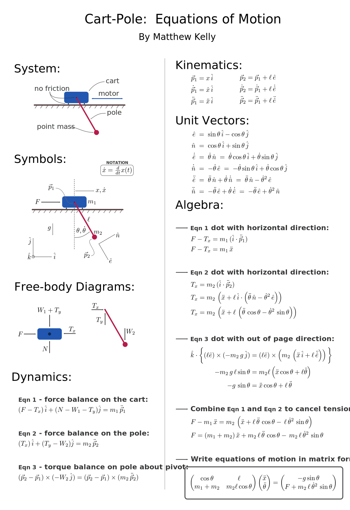

Cart-Pole Dynamics
← Home
← Tutorials
Here I present the derivation of the equations of motion for a cart-pole. You can download the pdf version
here
.
- Matthew Kelly
Video: Part One
Video: Part Two
